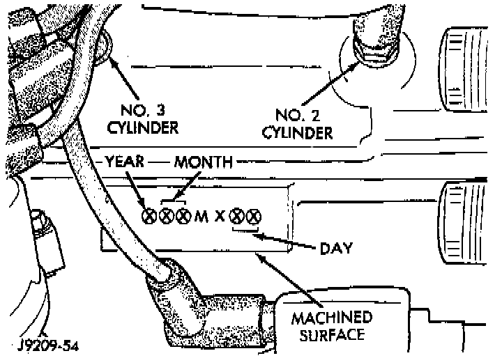

Engine: Application and ID
BUILD DATE CODEBuild Date Code Location:

The engine Build Date Code is located on a machined surface on the right side of the cylinder block between the # 2 and # 3 cylinders.
The digits of the code identify:
^ 1st Digit - The year (4 = 1994).
^ 2nd & 3rd Digits - The month (01 - 12).
^ 4th & 5th Digits - The engine type /fuel system/ compression ratio (MX = A 4.0 Liter (242 CID) 8.7:1 compression ratio engine with a multi - point fuel injection system).
^ 6th & 7th Digits - The day of engine build (01 - 31).
FOR EXAMPLE: Code * 401MX12 * identifies a 4.0 Liter (242 CID) engine with a multi - point fuel injection system, 8.7:1 compression ratio and built on January 12, 1994.